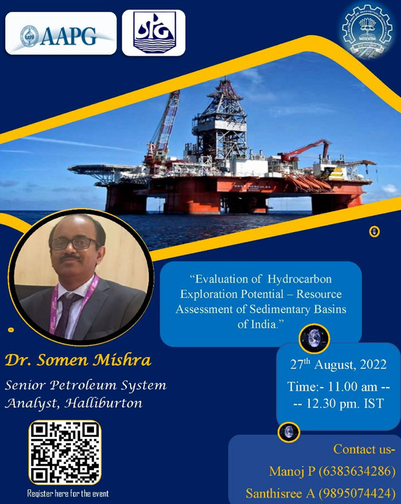
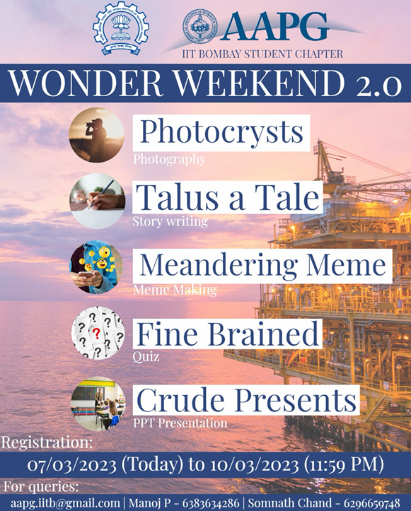

Department of Earth Sciences
Founded in 1917, the American Association of Petroleum Geologists is currently the world’s largest professional geological society with “chevron” as its premier sponsor.
The IITB student chapter was started in 2010. We have long been actively linked to AAPG. The original purpose of AAPG, to foster scientific research, advance the science of geology, promote technology, and inspire high professional conduct, still guides the Association today. AAPG provides publications, conferences, and educational opportunities to geoscientists and disseminates the most current geological information available to the general public. As the world’s premier professional association for explorationists, AAPG is about the science of petroleum geology. It’s also about the people. AAPG’s membership comprises more than 40,000 members in 129 countries in the upstream energy industry who collaborate – and compete – to provide the means for humankind to thrive. AAPG offers a network of communications that allow those professionals to succeed.
The purposes of this association are to:

Faculty Advisor
President

Vice President
General Secretary

Treasurer
Topic : Evaluation of Hydrocarbon Exploration Potential- Resource Assessment of sedimentary Basins of India
Speaker : Dr. SOMEN MISHRA, Senior Petroleum System Analyst, Halliburton

AAPG Wonder Weekend 2.0

AAPG conducted "GeoQuest 2024", an exciting quiz competition on October 20, 2024. The competition was open to all students from the Department of Earth Sciences at IITB. It featured two challenging rounds that test participants' knowledge and skills in geoscience.
The AAPG Student Chapter recently concluded LithoLens, a vibrant photography contest that challenged students to capture "spectacular geological elements" through their cameras. To balance adventure with local observation, the event featured two distinct categories: a Trekking Edition for those exploring the great outdoors and a Campus Edition for spotting geological wonders right at home within the university grounds.
Congratulations to our winners, Shashank Singh (Trekking Edition) and Shruti Yadav (Campus Edition), whose work stood out for its technical skill and geological insight.
To be Updated.